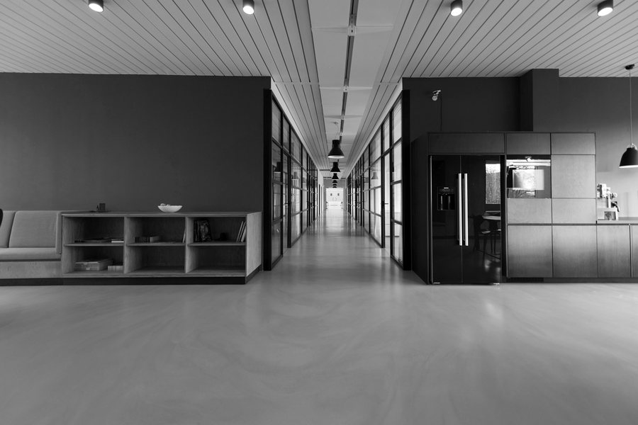

Konsultan hukum
Retensi berkas perkara, izin keluar kantor, dan penggajian paralegal pada satu arsip.
prostaff / hris
ProStaff HRIS menyatukan arsip dokumen, presensi, perizinan, penggajian, dan uji teknis dalam satu antarmuka monokrom. Aksi utama selesai dari keyboard, tanpa pop-up dan tanpa tur onboarding.
modul dalam satu layar kerja
library · perizinan · absensi · gaji · exam
klik untuk mencatat presensi
masuk dan keluar dari tombol yang sama
pop-up di dalam aplikasi
form, log, dan pratinjau tetap di halaman
format ekspor gaji: CSV dan PDF
csv untuk rekap · pdf untuk slip
prostaff / audiens
Empat jenis kantor, satu pola kerja: berkas menumpuk, izin menunggu, dan presensi dicatat di tempat berbeda. ProStaff menyatukannya tanpa mengubah kebiasaan tim.
Retensi berkas perkara, izin keluar kantor, dan penggajian paralegal pada satu arsip.
Lembur proyek yang otomatis masuk ke penggajian, dengan SOP terlampir di form izin.
Uji teknis dengan rubrik berbobot, arsip skor, dan riwayat kompetensi per engineer.

Presensi geofence, rekap keterlambatan sampai milidetik, dan ekspor bulanan tanpa makro.
prostaff / prinsip
Setiap layar punya satu tombol utama. Sisanya sekunder, dan tidak ada dua tombol yang melakukan hal sama.
Semua alur demo bisa diselesaikan tanpa mouse. Shortcut ditulis di tempat kerja, bukan di halaman bantuan.
Tidak ada pop-up, tidak ada tur onboarding, tidak ada notifikasi yang menutup pekerjaan.
Angka rata kanan, satuan ditulis penuh, dan presisi tidak dipotong agar rapi.
| Modul | Tombol | Aksi |
|---|---|---|
| Library | / | fokus cari |
| Library | ↑↓ | pindah hasil |
| Library | Enter | buka |
| Perizinan | 123 | jenis izin |
| Perizinan | Ctrl+Enter | kirim |
| Perizinan | Esc | kosongkan |
| Absensi | Space | catat |
prostaff / library
Pohon folder markdown, pencarian instan, dan pratinjau sumber pada satu layar. Tekan /, ketik kata kunci, lalu pindah hasil dengan panah.
prostaff / perizinan
Pilih jenis dengan angka, isi tanggal, kirim dengan Ctrl dan Enter. Setiap pengajuan tercatat dengan stempel waktu dan langsung terlihat di log.
Jatah
12
Terpakai
4
Menunggu
0
Tersedia
8
| Waktu | Jenis | Periode | Status |
|---|---|---|---|
| 2026-10-19 08:41:02.118 | Cuti | 21-12 → 24-12 | Disetujui |
| 2026-10-16 14:02:55.407 | Lembur | 16-10 · 3 jam | Disetujui |
| 2026-10-12 09:15:30.006 | Izin sakit | 12-10 | Ditolak |
prostaff / absensi
Tombol yang sama mencatat masuk dan keluar. Geofence dan shift menjadi konteks, bukan gerbang berlapis.
Belum ada catatan pada sesi ini.
Hadir
5
Terlambat
2
Total keterlambatan
0j 19m 0dtk 142ms
Total jam kerja
45j 50m 42dtk 650ms
| Stempel waktu | Peristiwa | Status |
|---|---|---|
| 2026-10-14 09:06:48.502 WIB | Masuk | Terlambat |
| 2026-10-14 18:02:11.088 WIB | Keluar | Tepat waktu |
| 2026-10-13 08:58:12.334 WIB | Masuk | Tepat waktu |
| 2026-10-13 18:11:09.902 WIB | Keluar | Lembur 1j |
| 2026-10-12 09:04:51.117 WIB | Masuk | Terlambat |
prostaff / gaji
Komponen bruto, potongan, dan take-home pay pada satu tabel. Ekspor CSV untuk rekap, PDF untuk slip yang bisa dicetak.
| Komponen | Raka Mahendra | Laras Wulandari | Intan Safitri | Total |
|---|---|---|---|---|
| Penghasilan | ||||
| Gaji pokok | 17.000.000 | 11.000.000 | 4.800.000 | 32.800.000 |
| Tunjangan | 4.985.000 | 1.465.000 | 500.000 | 6.950.000 |
| Lembur | 697.977 | 350.000 | 0 | 1.047.977 |
| Bruto | 22.682.977 | 12.815.000 | 5.300.000 | 40.797.977 |
| Potongan dan penyesuaian | ||||
| BPJS Kesehatan | 170.000 | 110.000 | 48.000 | 328.000 |
| JHT | 340.000 | 220.000 | 96.000 | 656.000 |
| JP | 170.000 | 110.000 | 48.000 | 328.000 |
| PPh 21 | 1.311.977 | 684.461 | 272.500 | 2.268.938 |
| Reimbursement | 0 | 0 | 0 | 0 |
| Take-home pay | 20.691.000 | 11.690.539 | 4.835.500 | 37.217.039 |
Angka ilustratif, bukan data payroll sungguhan.
komponen,raka_mahendra,laras_wulandari,intan_safitri gaji_pokok,17000000,11000000,4800000 tunjangan,4985000,1465000,500000 lembur,697977,350000,0 bruto,22682977,12815000,5300000 bpjs_kesehatan,170000,110000,48000 jht,340000,220000,96000 jp,170000,110000,48000 pph_21,1311977,684461,272500 reimbursement,0,0,0 take_home_pay,20691000,11690539,4835500
ProStaff
Slip gaji · Oktober 2026
No. 2026-10-014
Raka Mahendra
Dokumen contoh. Bukan bukti pembayaran.
prostaff / exam
Kandidat mengerjakan satu kasus, penilai memberi skor 0 sampai 4 per kriteria berbobot. Hasilnya tersimpan sebagai arsip, bukan tangkapan layar.
studi kasus · konsultan hukum · 6 pengaju per hari
Sebuah firma dengan 34 staf menerima rata-rata enam pengajuan izin per hari. Semua pengajuan masuk lewat pesan langsung ke dua orang admin. Pada pekan tersibuk, satu pengajuan cuti menunggu 31 jam sebelum disetujui, dan pemohon sudah membeli tiket.
Admin mencatat keputusan di buku tulis, lalu menyalinnya ke spreadsheet gaji pada akhir bulan. Dua kali dalam kuartal terakhir, cuti yang sudah disetujui tidak tercatat sebagai pengurangan jatah.
Tugas. Usulkan perbaikan alur dalam 300 kata. Sebutkan:
Hasil contoh
82,5/100
| 14:02:11 | editor · fokus | +00:18:04 |
| 14:20:15 | pindah tab · 12s | keluar |
| 14:20:27 | editor · fokus | +00:24:51 |
| 14:45:18 | kirim jawaban | selesai |
prostaff / alur data
Peristiwa di satu modul menulis ke modul lain tanpa penyalinan manual. Empat contoh di bawah berasal dari data demo yang sama.
prostaff / implementasi
Tanpa migrasi bertahap berbulan-bulan. Impor data yang ada, atur aturan kantor, lalu jalankan satu pekan penuh sebagai uji.
01
Bawa daftar karyawan, jatah cuti, dan komponen gaji dari spreadsheet yang sudah dipakai.
02
Tentukan shift, radius geofence, penilai rubrik, dan siapa yang menyetujui izin tiap divisi.
03
Mulai dari satu divisi selama satu pekan. Bandingkan rekap presensi dan gaji dengan cara lama.
prostaff / pendampingan
Kami membahas struktur folder Library Anda, alur izin yang berjalan sekarang, dan komponen gaji yang wajib muncul di slip. Tidak ada presentasi penjualan.
prostaff / faq
Jawaban ditulis pendek. Kalau pertanyaan Anda belum ada, kirim lewat formulir di bagian bawah.
Tidak. Form, log, dan pratinjau berada di halaman yang sama. Konfirmasi tindakan muncul sebagai baris status di bawah kontrol, bukan jendela baru.
Presensi memakai radius geofence per lokasi. Pada demo ini radius 150 m dipakai sebagai simulasi, dan tombol Space mencatat masuk atau keluar tanpa memeriksa GPS sungguhan.
Komponen potongan dihitung dari tarif yang Anda tetapkan per karyawan, lalu ditampilkan sebagai baris terpisah di tabel gaji. Angka di halaman ini ilustratif dan tidak menggantikan perhitungan konsultan pajak.
CSV untuk rekap satu periode dan PDF untuk slip per karyawan. Keduanya memakai angka yang sama dengan tabel di layar, tanpa pembulatan tambahan.
Ya. Setiap dokumen adalah berkas markdown dengan front matter untuk pemilik, versi, dan tanggal tinjauan. Tampilan dan sumber bisa dibalik dengan satu tombol.
Empat kriteria dengan bobot 40, 30, 20, dan 10, masing-masing diskalakan 0 sampai 4. Skor akhir adalah jumlah skor kali bobot, lalu dikonversi ke skala 100.
Bisa. Hak akses mengikuti folder tingkat dua, sehingga Hukum, Operasional, SDM, dan Teknik dapat punya pembaca berbeda. Dokumen di tingkat tiga mewarisi izin folder induknya.
Halaman ini adalah situs demonstrasi statis. Tidak ada data karyawan yang dikirim ke server, dan semua state demo hanya hidup di peramban Anda.
prostaff / demo
Bawa satu berkas gaji dan satu daftar karyawan. Kami jalankan alurnya bersama dalam 45 menit, tanpa slide.